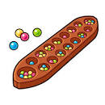
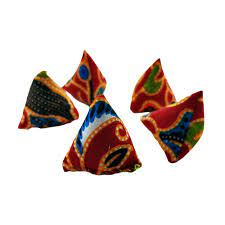
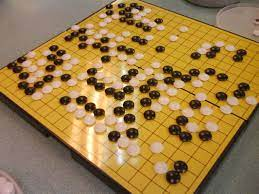
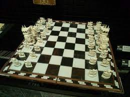
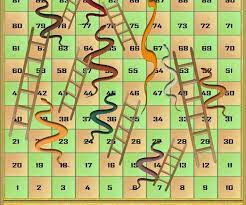
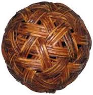

English
Malaysia's Tradisional Games
1. Congkak

- A game in pairs by filling "buah" (marbles) into a row of holes on a piece of board called the congkak board.
- People used to just play congkak on the ground and use small stones and seeds as marbles.
2. Batu Seremban

- involves at least two players and is usually played by women.
- Tool - five or seven small stones.
- All the stones are placed on the palm and tossed into the air, then greeted with the palm.
- The number of stones received will be counted on the back of the palm and counted as points.
- Also known as selambut and stone seven.
3. Go or Weiqi

- Played in pairs using black and white pieces
- Dominate a larger area of the board than the opponent to win.
4. Chinese Yoyo or Diablo

- Can be played individually.
- A yoyo tied to a string and held on both sticks in the hand. This stick allows the yoyo to spin on the rope and prevent it from falling.
5. Chaturanga

- A chess-like game played by two players.
- Like a war simulation to show the strength of the army.
- Victory depends on successfully conquering the opponent, especially defeating the king.
6. Paramapadham

- Like snake checkers
- Played by two to four people.
- Move according to the number of the dice thrown.
- The player who reaches the finish line the fastest wins.
7. Sepuk Raga

- Existed since the time of the Malacca Malay Sultanate.
- A player tosses a rattan ball to his friend using his hands.
- His friend will carry the ball by using his feet several times before kicking towards other players.
- Partners will take it in turns to hold and control the ball so that it does not fall to the ground.